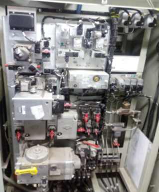

|
|
E 68000 tipi elektrikli lokomotifler için bilgiye konu başlıklarına dokunarak ulaşabilirsiniz.

✦1.Sigortaları ve Lokoda Batarya şalterini devreye koyun
✦2.Hava vanalarının normal işletme, "SİFA"vanaları (Acil fren valflerinin) "1" konumunda olduğundan emin olun,
✦3.Triblivalf üzerinden tren cinsine göre fren tipini (G-P-R) seçin.
✦4.Her iki kabinde Uygun PT seçin,
✦5.Çalışılacak kabinde MASCON anahtarını takıp saat yönünde çevirin,
✦6.Ana lokomotifin kabinini komut eden kabin konumuna getirmek için ‘NÖTR’, ‘İLERİ’ veya ‘GERİ’ butonlarda birine basın,
✦7.Yaklaşık bir dakika sonra, TCMS monitörleri aktif olacaktır.
✦8.PT ekranından anklaşman durumunu kontrol edin,
✦9.Pantografı kaldırın.
✦10.Havai hat geriliminin TCMS monitöründe normal olduğundan emin olun.
✦11.MCB ekranından anklaşman durumunu kontrol edin
✦12.MCB'yi kapamak için MCBS (Ana devre kesici) anahtarını ‘Açık’ konuma getirin
✦13.Cer ekranından anklaşman durumunu kontrol edin
✦14.Kontrol devresi koşullarının TCMS monitörü üzerinde aşağıdakilere uygun olduğundan emin olun:
✦• Lokomotif Durumu
•Ana Devre Kesici•Fren•Hat Gerilimi•Hat akımı•Cer/Fren•Pantograf•Fren Modu
✦15.Kumanda kontrol testlerini yapın,
✦16.Kurallara göre loko hareketini sağlayın,
✦
Kumanda masası üzerindeki katar freni iptal (Ranfor)
anahtarı 1. loko iseniz çalışır, 2. loko iseniz iptal
durumda olmalı.
✦
Susta yüklü fren anahtarı 0 (sıfır) konumuna çevrilmelidir.
✦
Tren Cinsine göre triblivalf üzerindeki G-P kolu tanzim
edilmelidir.
✦ Hız kademesi 80 km/s olarak seçilmelidir.
✦Kumanda
masasında şanzıman anahtarı açık duruma getirilmelidir.
Trenin hızı 80 km/s aşarsa konduvitten hava kaybedecek ve dizi frene geçecektir. Şanzıman üzerinden tanzim edilmelidir.
✦ Hareket fren şalteri "NÖTR" durumuna alınmalıdır.
✦ xxx
xxx.
✦Sürücü kabinini değiştirmek için ✦
✦a.Treni durdurun.
✦b.Park Freni uygulayın.
✦c.Ana Kontrolörü “KAPALI” konuma getirin.
✦d.Otomatik Direk Fren Valfini ‘FS’ konumuna getirin.
✦e.Telsizi KAPALI konuma getirin.
✦f.Klimayı, tüm dış ve iç ışıkları kapatın.
✦g.Ana kumandadan anahtarı alın.
✦h.Makine odasından diğer kabine geçin.
-
✦Diğer kabine geldiğinizde✦
✦Tüm dış ve iç ışıkları AÇIN.
✦b.Ana Kontrolör Anahtarını takın ve anahtarı AÇIK konuma getirin.
✦c.Aktif kabinesi İleri, Geri veya Nötr butonlarından birine basın.
✦d.Telsizi AÇIK konuma getirin ve seçilen kanalı düzeltin.
✦e.Fren Testini uygulayın.
✦f.Direk Fren Kolunu “Fren konumuna” getirin.
✦g.Park Frenini bırakın.
✦h.Ön farlarının / sinyal ışıklarının yandığından emin olun.
✦Yöntem 1✦
✦Her iki loko ölü olmalıdır.
✦1.İki lokomotifin koşum takımlarını bağlayın.
✦2.İki lokomotifin hava hortumlarını bağlayın.
Ana depo ve konduvit hortumlarının 4'üde bağlanmalı
✦3.Çoklu işletme ara bağlantılarını ve CCTV ara bağlantısının 3'ünüde karşılıklı bağlayın.
✦4.Lokomotiflerden hangisinin çeken (Yöneten), hangisinin çekilen (Yönetilen) olacağını belirleyin
✦5.Çekilen (uydu)lokomotiften başlayarak Batarya şalterini devreye koyun
✦6.B1.B17.07 Modrabl vanasını yatay konumuna getirerek kapatın
✦7.B1.B09.01 Ana kompresör besleme vanasını yatay konumuna getirerek kapatın
Çift borulu lokomotif ile çekme halinde (ana lokomotif MR’si mevcut) bağımlı lokomotifin ana hava deposunun ek dolumunu önlemek için bağımlı lokomotifin musluğu [B01.B09.B01] kapatılmalıdır.
Ana depo hortumları bağlanamadı ise bu işlem yapılmamalıdır.
✦8.Triblivalf üzerinden tren cinsine göre fren tipini (G-P-R) seçin.
Fren süreleri;
P-R;
Frenleme 3-5 sn. Çözme 15-20 sn.
G;
Frenleme 30-40 sn. Çözme 45-60 sn.
Acil durum frenlerinde, fren silindir basınçları;
G-2.8 bar(± 0.15 bar), P-2.8 bar(± 0.15 bar), R-3.8 bar(± 0.15 bar) olur.
✦9.Diğer vanaların normal işletme konumunda olduğundan emin olun,
✦10.Her iki kabinde Uygun PT seçin,
Daha sonra PT seçim hatası vermemesi için
✦11.MASCON anahtarını takıp saat yönünde çevirin,
✦12.DC Güç Anahtarını ‘AÇIK’ konuma getirin.
✦13.Yön butonlarına kesinlikle basmayın,
✦14.TCMS monitörlerinin lokomotifte normal olarak çalıştığından emin olun.
✦15.Lokonu kapı ve camlarını kapatarak öndeki lokoya geçin,
✦16.Çeken Ana lokoda Batarya şalterini devreye koyun
✦17.Hava vanalarının normal işletme konumunda olduğundan emin olun,
✦18.Triblivalf üzerinden tren cinsine göre fren tipini (G-P-R) seçin.
✦19.Her iki kabinde Uygun PT seçin,
✦20.Çalışılacak kabinde MASCON anahtarını takıp saat yönünde çevirin,
✦21.Ana lokomotifin kabinini meşgul kabin konumuna getirmek için ‘İLERİ’ veya ‘GERİ’ seçin.
✦22.Yaklaşık bir dakika sonra, TCMS monitörünün altında çoklu işletme sembolü gösterilir.
✦23.çoklu işletme sembolüne dokunarak her iki loko bilgilerini görün,
✦24.Uydu lokomotifin fren modunun ana lokomotifin fren modu ile aynı olduğundan emin olun.
✦25.Kuplajlı lokomotiflerin pantografını kaldırın.
✦26.Havai hat geriliminin TCMS monitöründe normal olduğundan emin olun.
✦27.MCBS anahtarı ile MCB'yi devreye alın,
✦28.Kontrol devresi koşullarının TCMS monitörü üzerinde aşağıdakilere uygun olduğundan emin olun:
✦• Lokomotif Durumu
•Ana Devre Kesici•Fren•Hat Gerilimi•Hat akımı•Cer/Fren•Pantograf•Fren Modu
✦29.Kuplajlı lokomotiflerin ivme kolu işleyişine bağlı olarak hareket ettiğinden emin olun.
Diziye enerji gerekirse öndeki lokodan kumanda edilerek ikinci lokodan verilecektir.
✦Yöntem 2✦
✦Her iki loko ölü olmalıdır.
✦1.İki lokomotifin koşum takımlarını bağlayın.
✦2.İki lokomotifin hava hortumlarını bağlayın.
✦3.Çoklu işletme ara bağlantılarını ve CCTV ara bağlantısının 3'ünüde bağlayın.
✦4.Lokomotiflerden hangisinin çeken (Yöneten), hangisinin çekilen (Yönetilen) olacağını belirleyin
✦5.Ana lokomotiften başlayarak uydu lokomotif de dahil DC Güç Anahtarını ‘AÇIK’ konuma getirin.
✦6.TCMS monitörlerinin her bir lokomotifte normal olarak çalıştığından emin olun.
✦7.Ana lokomotifin kabinini meşgul kabin konumuna getirmek için ‘İLERİ’ veya ‘GERİ’ seçin.
✦8.Yaklaşık bir dakika sonra, TCMS monitörünün altında çoklu işletme sembolü gösterilir.
✦9.Uydu lokomotifin fren modunun ana lokomotifin fren modu ile aynı olduğundan emin olun.
✦10.Kuplajlı lokomotiflerin pantografını kaldırın.
✦11.Havai hat geriliminin TCMS monitöründe normal olduğundan emin olun.
✦12.MCB anahtarını çalıştırın ve ana gücü temin edin.
✦13.Kontrol devresi koşullarının TCMS monitörü üzerinde aşağıdakilere uygun olduğundan emin olun:
✦• Lokomotif Durumu
• Ana Devre Kesici
• Fren
• Hat Gerilimi
• Hat akımı
• Cer/Fren
• Pantograf
• Fren Modu
✦14.Fren ekipmanının bağlı olduğundan emin olun.
✦15.Kuplajlı lokomotiflerin ivme kolu işleyişine bağlı olarak hareket ettiğinden emin olun.
✦Koduvit hattı bağlı ölü Frenli sevk;✦
✦Fren paneli üzerindeki Ranfor musluğu (B01.09.2) açılmalıdır,
✦1. fren paneli üzerindeki musluk (B01.09.01, B01.09.04 ve B01.17.07) açılmalıdır.
✦2. Kabin 1 de (N01) ve pinömatik sephada bulunan B01.08 Acil durum SİFA valflerinin tutakları I’dan 0’a değiştirilmeli.
✦3. Ön ve arka boji Park fren muslukları (B03.09/1 ve B03.09/2) izole edilmeli,
✦4.Bojilerden 4 adet park fren tijini çekilmeli,
Tijler çekilirken mutlaka "TIK" sesi duyulmalı, aksi taktirde park frenler çözmeyecektir.
✦5.Fren tecrübesi yapılmalı,
Fren bayraklarından Gevşek=Yeşil, Sıkılı=Kırmızı olduğu görülmeli
✦Ana depo ve Koduvit hattı bağlı ölü Frenli sevk;✦
fren panli üzerindeki musluk (B01.09.02)(B01.09.04) kapatlı halinde kalır.
park freni manüel olarak devre dışı bırakılmalı(B01.03) ve bırakma işlemi dışarıda montaj edilen göstergeleri kullanarak doğrulanmalıdır
✦Fren paneli üzerindeki Ranfor musluğu (B01.09.2) açılmalıdır,
✦1. fren paneli üzerindeki musluk (B01.09.01, B01.09.04 ve B01.17.07) açılmalıdır.
✦2. Kabin 1 de (N01) ve pinömatik sephada bulunan B01.08 Acil durum SİFA valflerinin tutakları I’dan 0’a değiştirilmeli.
✦3. Ön ve arka boji Park fren muslukları (B03.09/1 ve B03.09/2) izole edilmeli,
✦4.Bojilerden 4 adet park fren tiji çekilmeli,
Tijler çekilirken mutlaka "TIK" sesi duyulmalı, aksi taktirde park frenler çözmeyecektir.
✦5.Fren tecrübesi yapılmalı,
Fren bayraklarından Fren silindirleri=Yeşil, Park Frenler=Kırmızı olduğu görülmeli
Elektrik arızaları veya kazara oluşan hasarlar trenin elektriksel olarak "ÖLÜ" olmasına neden olabilecek şekilde trenin elektrik sistemini devre dışı bırakabilir.Bu durumda;
✦Hava bağlantıları olmadan ölü frensiz sevk;✦
✦1.Ön ve arka boji BC muslukları (B 01.02/1 ve B 01.02/2) izole edilmeli,
✦2.Ön ve arka boji Park fren muslukları (B03.09/1 ve B03.09/2) izole edilmeli,
✦3.Lokonun kanca bağlantısının yapıldığına emin olun,
✦4.Bojilerden 4 adet park fren tijini çekilmeli,
Tijler çekilirken mutlaka "TIK" sesi duyulmalı, aksi taktirde park frenler çözmeyecektir.
✦5.Boji bayrakları (İgnatörler) yeşil göstermeli,
✦6.Park fren bayrakları (İgnatörler) kırmızı kalacaktır.
Tijler çekildikten sonra kırmızı olmasının önemi yoktur..
✦Koduvit hattı bağlı ölü frensiz sevk;✦
İşletme koşulları gereği Loko üzerinden hava geçirilerek sevk edilecekse.Bu durumda;
✦Yukarıdaki işlemlere ilave Kabin 1 de (N01) ve pinömatik sephada bulunan B01.08 Acil durum SİFA valflerinin tutakları I’dan 0’a değiştirilmeli.
✦1.Lokomotifi park edilecek yere götürün.
✦2.Tüm kabin kapılarının kapalı olduğundan ve lokoda hiç kimsenin kalmadığından emin olun.
✦3.MCB'yi Açmak için MCBS (Ana devre kesici) anahtarını ‘Kapalı’ konuma getirin
✦4.Pantograf çalıştırma anahtarını ‘PANTO AŞAĞI’ konumuna getirin.
✦5.Park Freni uygulayın (arka duvardaki park freni uygulama itme butonuna basın).
✦6.Lokomotifi kapatmak için, ‘DCPS’yi ‘KAPALI’ konuma getirin.
✦7.Ana Kontrolör kolunu KAPALI konuma getirin.
✦8.Saat yönünün tersine çevirin ve ana kontrolör anahtarını (MASCON) çevirin.
✦9.Kabin ışıkları ana anahtarını kullanarak kabin ışıklarını kapatın.
✦10.Sürücü Kabininden ayrılabilirsiniz.
✦DAC DRIVER ACTIVITY CONTROL (Sürücü İşlem Kontrolü)
TCMS sürücü faaliyetlerini izlemek üzere DAC S/W anahtarını gözler.Hız 5 km/s'in üzerinde aktif olur. DAC anahtarı 2 dakika içinde kullanılmamış ya da sürekli olarak 2 dakikanın üzerinde kullanılıyor ise TCMS bir alarm sesi gönderir ve gösterge ünitesinde bir mesaj gösterir ve TCMS 30 saniye sonra acil durum freni uygular.